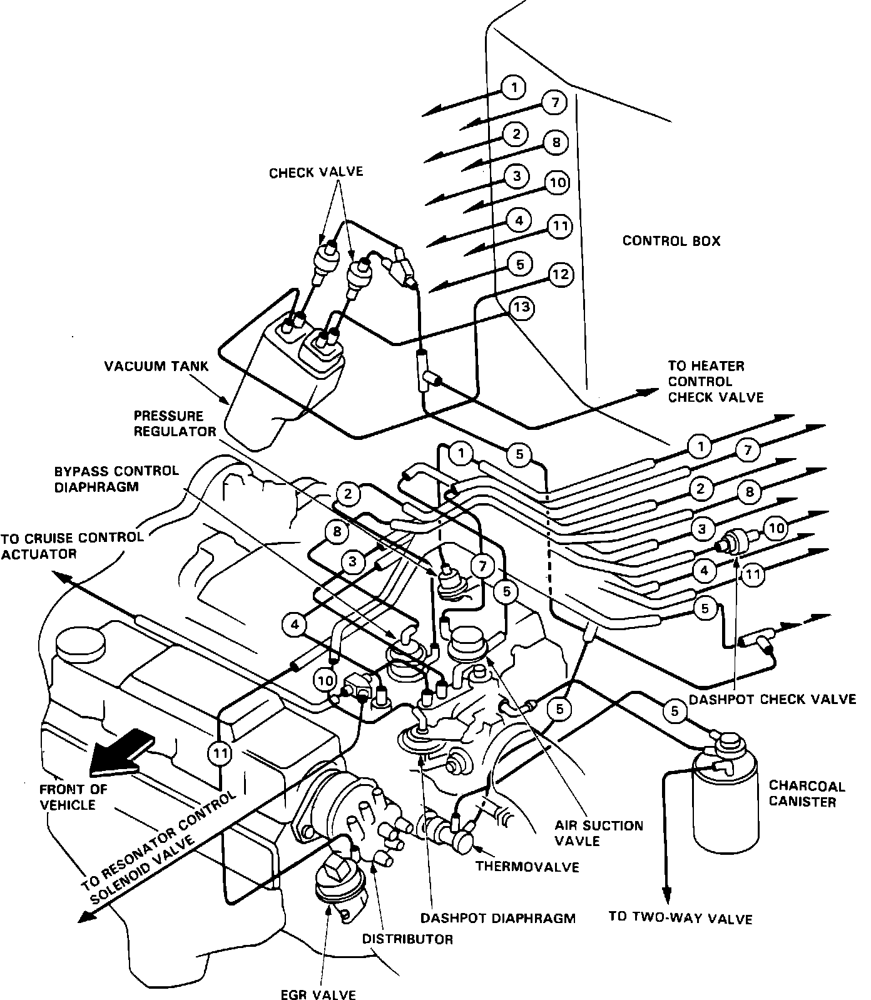
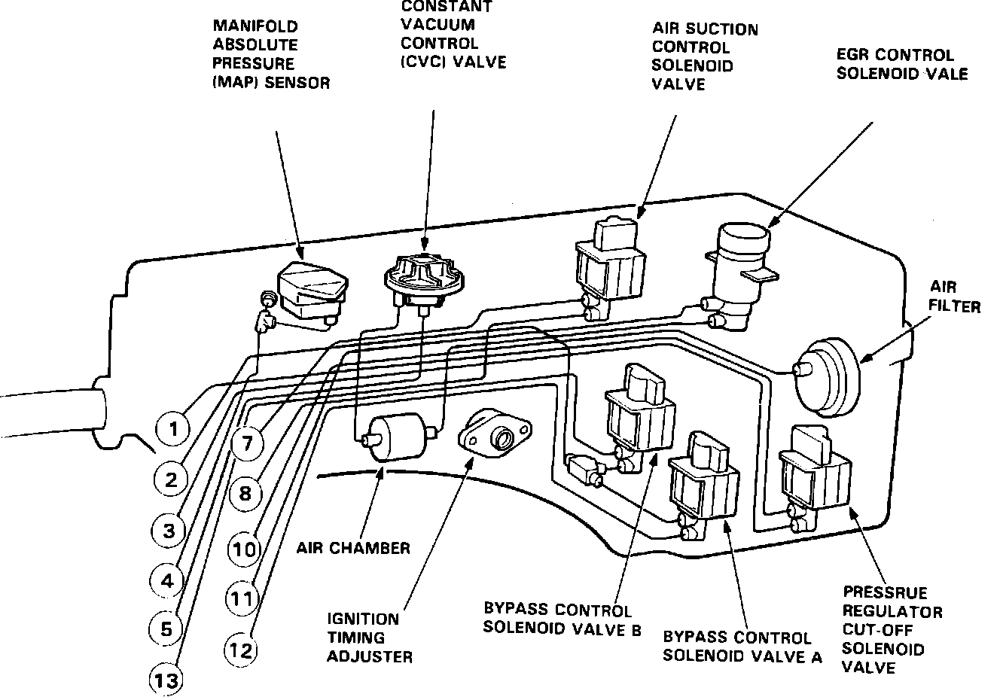
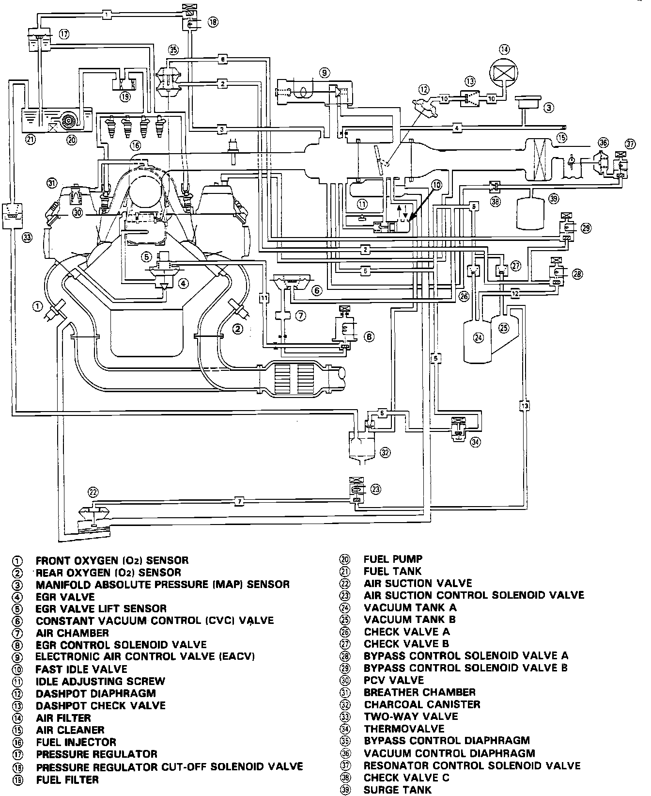

Emission Control Systems: Diagrams
Vacuum Connections:

VACUUM CONNECTIONS (ENGINE COMPARTMENT)
Vacuum Connections:

VACUUM CONNECTIONS (CONTROL BOX)
Vacuum Diagram:

VACUUM DIAGRAM
Fig. 15 Fuel And Vapor Hose Routing:

FUEL AND VAPOR HOSE ROUTING